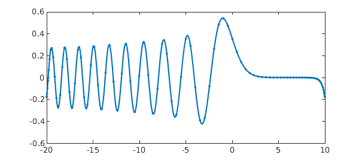

1. Block operators and spectral discretizations
Jared Aurentz and I have just revised our paper "Block operators and spectral discretizations" for the Education section of SIAM Review. We are excited about this work, which presents in a sequence of twelve examples the methods by which Chebfun solves boundary-value problems for ODEs and integral equations using rectangular discretization matrices. All the M-files will be available as SIREV supplementary materials, and for the moment they can be found at the URL [1].
We think this approach ought to be the standard way of working with spectral collocation methods, at least for problems in 1D. The ideas originate with Driscoll and Hale, and two other key contributors have been Hrothgar and Xu. See the references given at the end.
The conceptual basis of the paper is the idea that many problems are best formulated in a continuous manner via "block operators" analogous to the familiar block matrices -- complete with boundary conditions. Differential operators typically turn into "rectangular" blocks, which means mathematically that they have a nonzero Fredholm index and computationally that when discretized they get more columns than rows. Boundary conditions typically turn into row functionals, which when discretized become row functions.
What makes our paper so concrete is that that it calls Chebfun codes diffmat, diffrow, intmat, introw, and gridsample to do all the work. (As of today, these are available in the development branch of Chebfun.) We will illustrate with the labeled as Example 2 in the paper.
2. Example: Airy equation
This example is linear, but the same ideas work for nonlinear problems, as described in the paper.
Here is an Airy equation problem with two unusual boundary conditions, one involving an integral and the other prescribing that the values at the two endpoints should be equal. $$ u''(x) - x u(x) = 0, \quad \int_{-20}^{10}u(s)ds = 1, \quad u(-20) = u(10). $$ Here is a solution involving an $(n+2)\times (n+2)$ block matrix $A$ with $n=85$:
n = 85; X = [-20,10]; x = @(x) x; L = diffmat([n n+2],2,X) - diag(gridsample(x,n,X))*diffmat([n n+2],0,X); vT = introw(n+2,X); wT = diffrow(n+2,0,10,X) - diffrow(n+2,0,-20,X); A = [L; vT; wT]; rhs = [zeros(n,1); 1; 0]; u = A\rhs; plot(chebfun(u,X),'.-')
Notice that $A$ consists of three blocks. The top of it is an $n\times (n+2)$ block representing the differential operator, discretized with diffmat. Note that diffmat([n n+2],0,X) gives us a differentiation matrix of order zero -- a "rectangular identity". Then comes a row vT corresponding to the integral condition, discretized with introw, and another row wT corresponding to the other boundary condition, involving a difference of two evaluation functionals (diffrow with argument 0 evaluates the zeroth derivative). The right-hand side is a vector with a block structure to match.
The diagonal matrix given by diag(gridsample(x,n,X)) is sparse, and in Matlab it can help to represent it that way for larger values of $n$. This can be done by replacing that expression by spdiags(gridsample(x,n,X),0,n,n).
Note how the code segment computes a solution vector $u$ of length $n+2$. A call to chebfun(u,X) is then used so that we can plot the polynomial interpolant as well as the data points.
This computation has none of Chebfun's adaptivity in choosing $n$. Here is a standard Chebfun solution of the same problem:
X = [-20,10]; L = chebop(X); L.op = @(x,u) diff(u,2) - x*u; L.bc = @(x,u) [sum(u)-1; u(10)-u(-20)]; u = L\0; plot(u,'.-')

The length is about the same as the one we hardwired:
length(u)
ans =
93
3. Looking at the matrices
The make things vivid, let's look at the block matrices for some very small dimensions. Here are discretizations with $n = 1,2,3,4$. In each case the first $n$ rows correspond to the differential operator and the final two rows to the boundary conditions. Of course, these small matrices wouldn't be much good at resolving the ODE problem.
format short for n = 1:4 L = diffmat([n n+2],2,X) - diag(gridsample(x,n,X))*diffmat([n n+2],0,X); vT = introw(n+2,X); wT = diffrow(n+2,0,10,X) - diffrow(n+2,0,-20,X); A = [L; vT; wT] end
A =
0.0044 4.9911 0.0044
5.0000 20.0000 5.0000
-1.0000 0 1.0000
A =
20.0237 -0.0415 0.0296 -0.0119
-0.0119 0.0296 -0.0415 -9.9763
1.6667 13.3333 13.3333 1.6667
-1.0000 0 0 1.0000
A =
20.0756 -0.1266 0.0800 -0.0512 0.0222
-0.0044 0.0178 4.9733 0.0178 -0.0044
0.0222 -0.0512 0.0800 -0.1266 -9.9244
1.0000 8.0000 12.0000 8.0000 1.0000
-1.0000 0 0 0 1.0000
A =
20.1849 -0.3038 0.1815 -0.1051 0.0781 -0.0356
-1.8626 6.0695 9.7812 -2.2839 1.4119 -0.6161
0.1339 -0.3070 0.4972 -1.9999 -1.2116 0.3874
-0.0356 0.0781 -0.1051 0.1815 -0.3038 -9.8151
0.6000 5.4111 8.9889 8.9889 5.4111 0.6000
-1.0000 0 0 0 0 1.0000
4. References
-
J. L. Aurentz and L. N. Trefethen, Block operators and spectral discretizations, SIAM Review, revised manuscript submitted August 2016. See people.maths.ox.ac.uk/trefethen/papers.html.
-
T. A. Driscoll, Automatic spectral collocation for integral, integro-differential, and integrally reformulated differential equations, J. Comp. Phys. 229 (2010), 5980--5998.
-
T. A. Driscoll and N. Hale, Rectangular spectral collocation, IMA J. Numer. Anal., 36 (2016), 108--132.
-
Hrothgar, Block Operators and Continuous Adjoint Methods, transfer thesis, Mathematical Institute, University of Oxford, November 2014.
-
K. Xu and N. Hale, Explicit construction of rectangular differentiation matrices, IMA J. Numer. Anal. 36 (2016), 618--632.